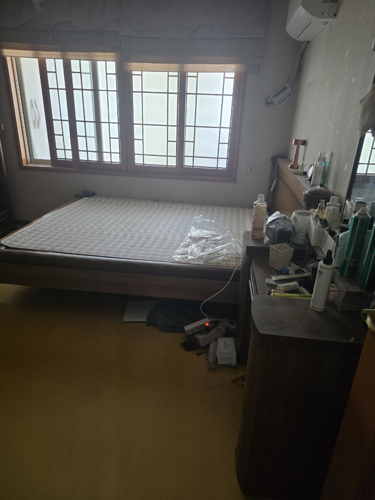
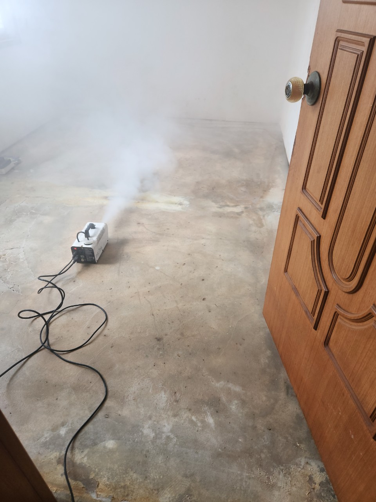
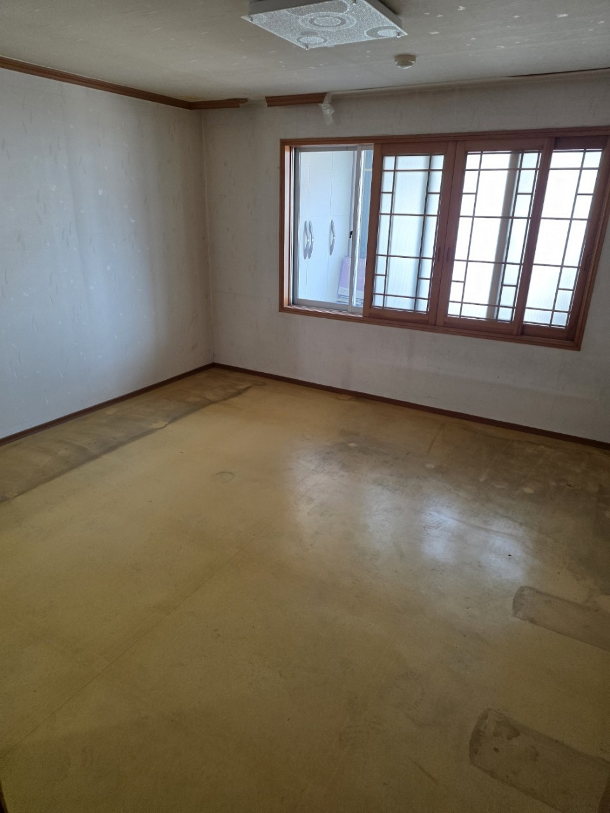

보관 물건이 적고 엘리베이터가 있으면 당일이 많습니다. 계단 5층 이상에 대형 가구가 있으면 시간을 더 봅니다.
교문2동 · 고밀도 역세권
교문2동 유품정리,
교문2동 유품정리,
밀집 빌라 현장 상담
교문2동은 구리시에서 면적이 작은 고밀도 생활권입니다. 교문동 주거와 근린상가가 붙어 있고 구리역 이용이 잦습니다. 세대 면적은 작아도 물건이 수직으로 쌓인 현장이 많습니다. 구리 올바른정리는 교문2동 유품정리를 보관 목록 중심으로, 문이 안 열리는 세대는 쓰레기집청소로 시작합니다.
SERVICE
구리시 교문2동에서 맡기는 작업
교문2동은 상가 위 주거, 다세대 계단 운반 상담이 많습니다.
유품정리
교문2동 빌라 유품 분류
옷과 생활용품 사이에 통장이 끼어 있는 세대를 대비해, 서랍은 가족이 먼저 열어 보시도록 안내합니다. 가져갈 짐이 적으면 당일 비우기가 가능합니다. 층간소음을 줄이려 대형 가구는 패드로 감쌉니다.
쓰레기집청소
교문2동 적치·폐업 잔짐
1층 점포 집기와 위층 생활폐기물이 같은 출입구를 쓰는 건물이 있습니다. 동선을 나눠 민원을 줄입니다. 복도 적치는 선반출 후 실내로 들어갑니다.
PRICE
교문2동 비용이 달라지는 지점
교문2동은 계단 층수와 상가 영업시간이 금액·일정에 직접 붙습니다.
* 부가세 별도 · 시작가이며 현장 확인 후 확정
유품정리
45만원 부터~
빌라 유품 45만원부터, 계단만 있는 건물은 층당 운반을 더합니다.
고독사 특수청소
80만원 부터~
환기창이 작은 방의 오염은 80만원부터입니다.
쓰레기집·일반폐기물
30만원 부터~
폐업 집기+생활폐기물이면 품목을 나눠 30만원대에서 조정합니다.
GUIDE
교문2동에서 쓰레기집청소를 먼저 해야 하는 집은?
현관이 열리지 않거나 화장실을 쓸 수 없으면 유품 분류보다 적치 제거가 먼저입니다.
교문2동 유품정리는 왜 서랍 확인을 강조하나요?
밀집 빌라는 공간이 부족해 서류가 옷장·주방 서랍에 흩어집니다. 유품정리는 버리기 전에 가족이 지정한 구역만 남기는 일이라, 서랍을 통째로 버리면 문제가 됩니다. 작업 전 10분이라도 중요 물건을 봉투에 담아 주시면 됩니다.
교문2동 쓰레기집청소 중 옆 점포 민원은 어떻게 줄이나요?
상차 시간을 오픈 전과 점심 피크로 나눕니다. 복도에 물건을 쌓아 두지 않고 바로 내립니다. 이 방식이 교문2동처럼 상가+주거 혼재 지역에 맞습니다.
구리역 도보권이면 비용이 더 나오나요?
거리 자체가 가산 이유는 아닙니다. 다만 역 주변은 주정차 단속이 있어 운반 인원이 늘 수 있습니다. 그 부분이 반영됩니다.
교문2동 원룸 여러 호를 한꺼번에 맡길 수 있나요?
같은 건물 공실이 여러 개면 하루 일정으로 묶습니다. 호수마다 유품/쓰레기집 여부가 다르면 전표를 나눕니다.
교문2동 상담에 필요한 최소 정보는?
층수, 엘리베이터, 현관이 열리는지, 1층 상가 여부입니다. 사진 두 장(현관, 가장 쌓인 방)이면 범위를 바로 말씀드립니다.
PROCESS
교문2동 작업 순서
교문2동은 민원 없는 상차 시간을 일정표 맨 위에 둡니다.
STEP 01
건물 유형 확인순수 주거인지 상가 혼재인지에 따라 출입 동선을 나눕니다.
STEP 02
서랍·보관 지정가족이 남길 구역을 표시한 뒤 나머지부터 포장합니다.
STEP 03
즉시 반출복도 적재를 최소화하고 차량이 붙는 즉시 실습니다.



FAQ
교문2동에서 자주 묻는 질문
검색·AI 답변에 쓰일 수 있도록 이 지역 기준으로 짧게 정리했습니다.
됩니다. 출입구를 분리하거나 상차 시간을 옮겨 진행합니다.
유품 45만원, 일반 반출 30만원으로 같습니다. 차이는 계단과 대기 시간입니다.
건물 규정과 거주자 동의가 있으면 저녁 상차도 검토합니다. 기본은 주간입니다.